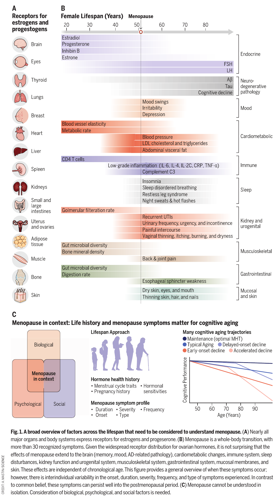
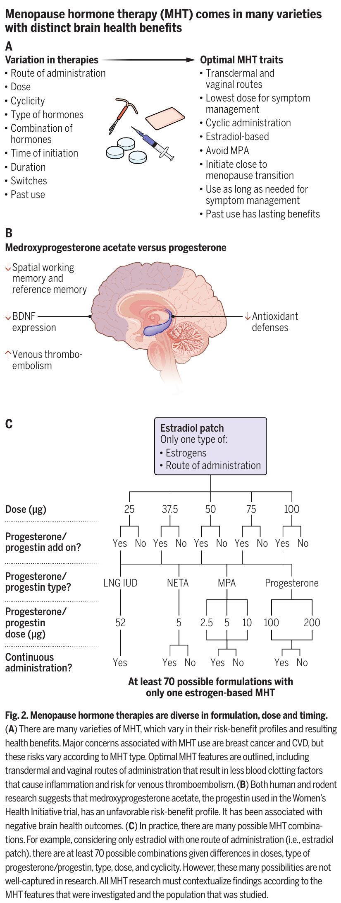
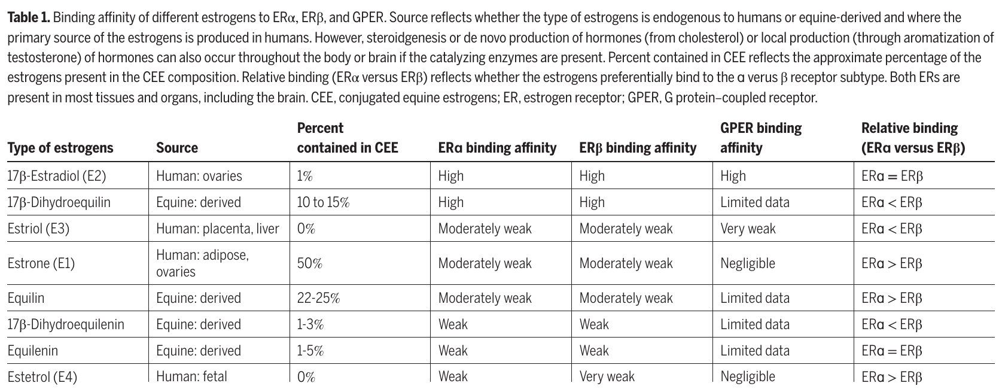
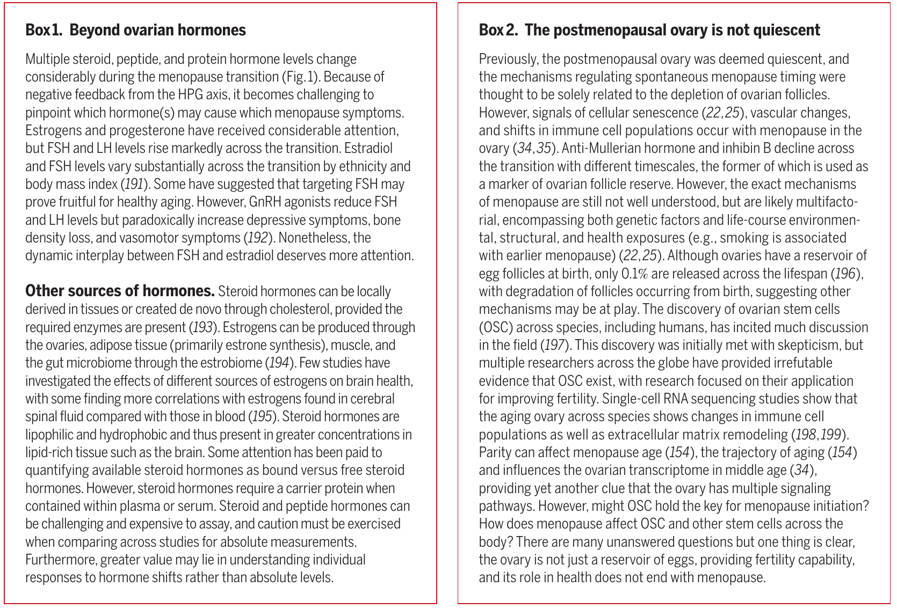

子宮仍在
17β-estradiol 貼片
25–50 μg／日
＋足量子宮內膜保護
口服 micronized progesterone
週期性：200 mg 睡前，每月 12–14 天
或連續性：100 mg 睡前，每日使用
Science 2026 · Women's Health · Review
把文章觀點與可用的臨床處方分開閱讀：先辨識症狀，再評估時機、風險、子宮與治療偏好。
Clinical reading notes
MHT 的效益與風險，取決於「給誰、何時開始、給什麼、如何給」。
Reframing menopause and menopause hormone therapy as opportunities for healthy aging
Laura L. Gravelsins、Mateja Perović、Madeline Wood Alexander、Tallinn F. L. Splinter、Andrew J. McGovern、Jennifer S. Rabin、Liisa A. M. Galea。Science 394(6819):60–68，2026 年 10 月 1 日；Review。[1]
本文從停經的異質性與腦部健康切入，主張將停經轉變視為照護與健康老化的介入窗口。這是一篇整合機轉、觀察性研究與臨床試驗的敘述性綜論，並非處方指引，也不是證明 MHT 能預防失智的新隨機試驗。
Clinical reading notes
臨床補充 · [2,3] 以下是供醫師討論的起始範例，適用於有困擾性血管舒縮症狀（VMS）、經個別評估適合全身性 MHT 的女性。沒有一張適用所有人的「最佳處方」。
17β-estradiol 貼片
25–50 μg／日
＋足量子宮內膜保護
口服 micronized progesterone
週期性：200 mg 睡前，每月 12–14 天
或連續性：100 mg 睡前，每日使用
17β-estradiol 貼片
25–50 μg／日
通常可單用雌激素；若有殘留子宮內膜或特殊子宮內膜異位症病史，另行評估。
低劑量局部
陰道雌激素
先討論潤滑劑／保濕劑；持續困擾時考慮局部治療。通常不需加黃體素。依製劑仿單使用。
貼片數字是每日釋放量，更換頻率依產品仿單；凝膠不能以 μg 數字直接換算。上述黃體素劑量配合標準雌激素劑量；提高雌激素時須重新確認內膜保護是否足夠。
以症狀改善、出血與副作用調整至有效且可耐受的劑量；自然停經一般不需常規追蹤血中 estradiol 目標。治療後早期複評，之後定期重新評估。MHT 不具可靠避孕效果；52-mg LNG-IUS 可作替代內膜保護選項，適應症與使用年限依當地核准及指引。
Clinical reading notes
| 選項 | 實用定位 | 優勢與證據 | 限制與注意 |
|---|---|---|---|
| Transdermal 17β-estradiol | 全身性 VMS 治療；貼片／凝膠 | 避開肝臟首渡效應；血栓風險資料較口服有利 | 主要風險比較來自觀察研究；不代表零血栓風險。有子宮仍需內膜保護。 |
| Micronized progesterone | 與全身性雌激素合併，保護子宮內膜 | 可代謝成作用於 GABA-A 的 allopregnanolone；某些代謝與乳房風險資料較有利 | 可能嗜睡、暈眩或情緒不適；不能宣稱已由大型直接比較 RCT 證明乳癌、CV 或失智風險全面優於 MPA。 |
| Oral CEE／MPA | CEE 為共軛馬雌激素；MPA 為合成黃體素。WHI 合併試驗採此組合 | 有大型 RCT 的症狀、骨骼與臨床風險資料 | WHI 結果須限定製劑與受試者背景。本文建議避開 MPA；不能因此抹去 WHI 的有效風險訊號，或推定其他方案完全安全。 |
| Low-dose vaginal estrogen | GSM：乾澀、性交痛與相關泌尿症狀 | 局部治療、全身暴露通常低；一般不需黃體素 | 不能取代 VMS 的全身性治療。並非所有陰道環皆為低劑量局部製劑；癌症病史需個別共同決策，任何停經後出血均應評估。 |
來源：Science pp.63–65、Figure 2／Table 1 [1]；IMS 2024 [2]；NAMS 2022 [3]。口服雌激素在合適的低風險女性仍可選用，並非一律排除。
Clinical reading notes
臨床補充 先確認症狀與治療目標，再決定是否需要全身性治療。VMS＝熱潮紅／夜汗；GSM＝停經泌尿生殖症候群；VTE＝靜脈血栓栓塞；CV＝心血管。
不明原因陰道出血、既往雌激素敏感癌症、VTE／高風險血栓體質、冠心病／心肌梗塞／中風或肝病：先處理或轉介專科，討論非荷爾蒙 VMS 治療。改用貼片並不能解除這些禁忌。
潤滑／保濕 → 若仍有困擾，討論低劑量陰道雌激素。若同時有 VMS，另評估全身性治療；全身性治療後仍有 GSM，可再討論局部加用。
健康、未滿 60 歲且距停經未滿 10 年，通常是較有利的起始情境。若 ≥60 歲或距停經 ≥10 年才開始，絕對 CV／VTE 風險較高，需更審慎評估；「未滿 60 歲或未滿 10 年」不是任一條件通過即自動適用。
肥胖、代謝風險、高三酸甘油脂等，可使經皮途徑更值得考慮；同時管理血壓、吸菸、血脂與糖尿病。高 CV 風險或既往事件者優先專科評估／非荷爾蒙方案，不以年齡門檻取代風險判斷。
子宮在 → 全身性雌激素＋足量 progestogen。子宮不在 → 通常雌激素單用。依停經階段、出血偏好及黃體素耐受性選 sequential／continuous。
調整劑量並定期重評風險；新發、持續或不尋常出血需評估。延續既有治療與高齡首次開始不同，不應僅因滿 65 歲自動停藥。
Original figures & table
下列影像直接擷取自提供的原文 PDF，保留英文標示與圖說；中文閱讀提示為本站補充。點選「放大原圖」可在新分頁查看高解析版本。

原文 p.61；保留 A–C 分圖與英文圖說。中文提示：荷爾蒙、症狀與認知老化須放在生命歷程及生物、心理、社會背景中理解。
來源：Gravelsins et al., Science 2026, DOI: 10.1126/science.aeg5004。圖表 credit：A. Mastin / Science。Copyright © 2026 the authors；exclusive licensee AAAS。
放大原圖 ↗ 完整原圖與分區幻燈片 →
原文 p.64；保留 A–C 分圖與英文圖說。中文提示：作者的理想特徵是本文觀點，並非所有項目均有相同等級的臨床證據。C 圖的劑量單位依原圖保留；臨床黃體素劑量請以本頁處方框架的 mg 與產品仿單為準，LNG-IUS 的 52 指裝置總含量 mg。
來源：Gravelsins et al., Science 2026, DOI: 10.1126/science.aeg5004。圖表 credit：A. Mastin / Science。Copyright © 2026 the authors；exclusive licensee AAAS。
放大原圖 ↗ 完整原圖與分區幻燈片 →
原文 p.65；保留原始表頭、資料與表說。中文提示：受體親和力與 CEE 成分比較是藥理資訊，不能直接推論臨床療效或風險高低。
來源：Gravelsins et al., Science 2026, DOI: 10.1126/science.aeg5004。圖表 credit：Science 原文 Table 1。Copyright © 2026 the authors；exclusive licensee AAAS。
放大原圖 ↗ 完整原圖與分區幻燈片 →
原文 p.62；兩個說明框完整保留。中文提示：停經轉變涉及多種荷爾蒙；停經後的卵巢仍有生物活動。
來源：Gravelsins et al., Science 2026, DOI: 10.1126/science.aeg5004。圖表 credit：Science 原文 Box 1–2。Copyright © 2026 the authors；exclusive licensee AAAS。
放大原圖 ↗ 完整原圖與分區幻燈片 →Clinical reading notes
受體分布與荷爾蒙變化影響腦、骨骼、代謝等系統；須區分停經作用與年齡效應。
本文觀點 · pp.60–62 [1]作者彙整多達 72 種症狀，引用平均同時約七種的調查。這不是把所有不適都歸因於停經的診斷清單。
本文觀點 · p.60 [1]自然、手術／治療誘發、早發停經的背景不同；與後續疾病風險的關聯可提示照護需求，不能直接證明補充荷爾蒙能逆轉風險。
本文觀點 · pp.61–63 [1]VMS 有有效治療，卻有許多人未獲照護；應詢問睡眠、情緒、泌尿生殖症狀與生活品質。
本文觀點 · pp.60,63 [1]製劑、途徑、劑量、合併藥物、週期與開始時間皆重要；WHI 的特定方案不能代表所有療法。
本文觀點 · pp.63–65; Fig.2 [1]接近停經轉變開始與多年後首次開始有不同風險背景；持續症狀應個別重評，而非僅按生日停藥。
本文觀點 · pp.63–64; Fig.2 [1]作者偏向 estradiol 與 cyclic progesterone、避開 MPA；週期性神經優勢相當部分是齧齒動物機轉資料。
本文觀點 · pp.64–65 [1]APOE／COMT／BDNF、避孕藥與懷孕史、PMS／PMDD 荷爾蒙敏感性可能修飾反應；尚非常規基因檢測選藥演算法。
本文觀點 · pp.65–66 [1]Clinical reading notes
MHT 異質性應納入研究；作者提出偏向經皮／陰道途徑、低有效劑量、estradiol-based、避開 MPA、cyclic 使用與接近停經開始的理想特徵。這些主張的證據強度並不一致。
本頁的起始劑量、內膜保護、禁忌與追蹤架構來自 IMS／NAMS 指引及實務轉譯；並非 Science 提出的固定處方，也不代表醫學會對本頁背書。
用 MHT 預防失智、用基因型直接決定處方、以 cyclic 改善人類長期神經結局，均不能當成已確立適應症。腦體積、受體親和力或觀察性關聯不等於臨床預防效果。
「生物同質」也不代表無風險；核准的 estradiol／micronized progesterone 與未標準化的調製荷爾蒙不同。乳癌風險需依療法、使用時間與個人病史評估，不能將任何組合描述成零風險。
Clinical reading notes
視覺配圖：bertvthul / Pixabay（Content License）；Yunus Tuğ / Pexels（Pexels License）。兩者為免費素材，非原文研究圖。
整理／來源核對：2026-10-10。本站為繁體中文教育性讀書筆記；處方須由臨床醫師依個人病史、核准產品與共同決策確認。